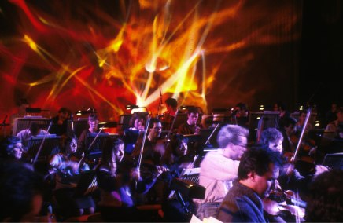
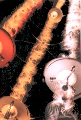

" THE FUTURE OF ART IS LIGHT "
" THE FUTURE OF ART IS LIGHT "  " THE FUTURE OF ART IS LIGHT "
" THE FUTURE OF ART IS LIGHT "

In the past I divided my time between kinetic art and stage work.
My stage lighting focused on electro-acoustic music culminating in a series
of concerts in the mid 80's with the Electric Symphony Orchestra
sponsored by Yamaha.
The illustration on the left below is from the Almeida Festival in 1985.
The illustration on the left above and on the right shows an ESO concert presented at the Queen Elizabeth hall at the London South Bank Arts Complex in 1986.
This was to be one of the last concerts I lit. I wanted to free myself from the restrictions of being
under the control of a director so I decided to focus on kinetic art: a subject in which I could bring together my divided background and combine my knowledge of physics with my love of light.
In 1983, at London's ICA, I exhibited the first sculptures to use
chromastrobic light, a discovery I had made the previous year.
Chromastrobic light changes color faster than the eye can see, causing
the appearance of rapidly moving forms to mutate in the most remarkable
ways.
More recently I have concentrated on LIGHT SCULPTURE. In 1990,
I founded the Earth Signals group of artists. We exhibited together and I
presented new kinetic sculptures which allowed beams of chromastrobic
light to play on strands of spinning string, their motion sensitive to the
laws of chaos. These sculptures have a startling beauty as they create
delicate, changing, three dimensional patterns of light which float in the
air. An inspiration to enquiring minds, a scientific puzzle. How do these
complex forms arise from something so simple? My work is gradually becoming
known internationally. In 1991, a mass produced item was launched based on
my light sculptures. Named String Ray, 30,000 were sold in USA.
In the film strip above you see 8 frames taken from the animation that is at the top of the page. There are big jumps in the shapes from frame to frame. When you see this in real life, the eye can see far more of these subtle changes than can be caught by the camcorder. Below right you see a stable form. Sometimes harmony takes over from chaos to produce a 'visual chord'.
In 1993 I
was invited to exhibit at "Images du Futur", a major annual exhibition of
futuristic art held in Montreal. I was given the largest space and exhibited
the tallest work of art in the show, Big String, a 6 meter high light sculpture.
This was the first project where I used a computer control
system, utilizing a PC with a digital to analogue converter and an industrial
digital servo system. Software was developed providing a graphic user
interface which gave clear and precise control of the system parameters.
This made it possible to program long and complex sequences of the
light sculpture's activity without any repetition... organized chaos.
In 1994 my work was shown at The Light Fantastic exhibition in
Walsall, near Birmingham, England, a group show of a selection of British
artists currently working in this field. A number of my sculptures were
selected for 'Lichtspielereien' a hands on exhibition at Technorama, the
major science museum in Switzerland . Some of these works were
purchased and are now on permanent display.

A touch screen computer is used to control The Light Spinner
with interactive and non-interactive modes. In the interactive
mode, at a touch of the screen, all three 'strings' can be changed to
different colors in varying combinations of activity. Left alone the non-
interactive mode will start to control the sculpture automatically. This
enhances the eye catching quality of the work, insuring that there is
always changing activity.
1995 also saw the completion of a smaller piece, Light Wave
Three, using the same control system as the Light Spinner. It is a free
standing sculpture 2.5 metres tall. It was first exhibited unfinished without a computer in Japan at Artec '95 in where I received a Recommendatory
prize. After completion it was shown here in England.
Paul Friedlander 1997
" THE FUTURE OF ART IS LIGHT " Henri Matisse
You can download a trial version of ZIP ART for Windows free.
Download Now ZIP file format, 800 KB.
go to home page
go to Zip Art
go to gallery guide
go to visual music
Light is the closest we come to directly sensing the universal
energy. My intention is to make those who see my art aware of this energy
and inspire them with a sense of awe and wonder.


In this pair of illustrations you see maquettes made with black and white designs which change to bright colors when spinning in chromastrobic light.

 In the summer of 1993 British Telecom commissioned a large
fibre optic sculpture which was exhibited in the foyer of their head office
in London, as part of the Art in the City project.
Located a few hundred metres from St. Paul's Cathedral, at night time BT's vast atrium window was lit up with this strange 'burning bush'.
BT wished to show a work made with fibre optic as it was the new
telecommunication medium.
In the summer of 1993 British Telecom commissioned a large
fibre optic sculpture which was exhibited in the foyer of their head office
in London, as part of the Art in the City project.
Located a few hundred metres from St. Paul's Cathedral, at night time BT's vast atrium window was lit up with this strange 'burning bush'.
BT wished to show a work made with fibre optic as it was the new
telecommunication medium.
 More recently using the computer programming language
Delphi, I have written a program, Zip Art which lets you create surprisingly subtle and beautiful
images and Visual Music using special drawing tools I have developed. Go to Java Zip to get a taste of what this is all about. Java Zip is an interactive Applet written in the internet friendly programming language, Java. You can try out a selection of the special drawing tools available with Zip Art. On many of the Web site pages you will see small images made with it.
In the Picture Gallery you will find larger images drawn with Zip Art. I have in preparation a CD Rom with more information on my light sculptures, a complete working version of Zip Art and an interactive picture gallery with more features and many more images than on the web site version. This will be available free of charge to museums and other commissioning bodies, please contact me for further information.
More recently using the computer programming language
Delphi, I have written a program, Zip Art which lets you create surprisingly subtle and beautiful
images and Visual Music using special drawing tools I have developed. Go to Java Zip to get a taste of what this is all about. Java Zip is an interactive Applet written in the internet friendly programming language, Java. You can try out a selection of the special drawing tools available with Zip Art. On many of the Web site pages you will see small images made with it.
In the Picture Gallery you will find larger images drawn with Zip Art. I have in preparation a CD Rom with more information on my light sculptures, a complete working version of Zip Art and an interactive picture gallery with more features and many more images than on the web site version. This will be available free of charge to museums and other commissioning bodies, please contact me for further information.
E-mail praskovi@clara.net